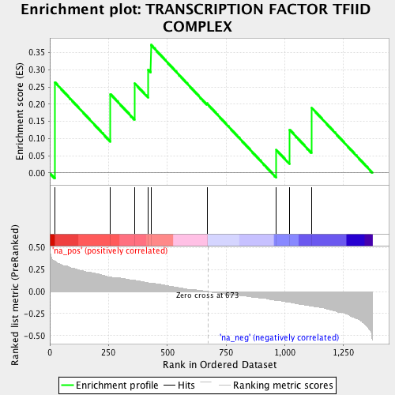
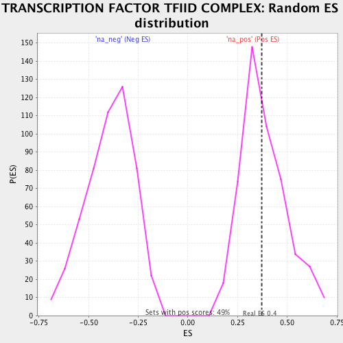

| | | Dataset | ranked_by_GEF.rnk |
| Phenotype | NoPhenotypeAvailable |
| Upregulated in class | na_pos |
| GeneSet | TRANSCRIPTION FACTOR TFIID COMPLEX |
| Enrichment Score (ES) | 0.3724888 |
| Normalized Enrichment Score (NES) | 0.9690628 |
| Nominal p-value | 0.4755102 |
| FDR q-value | 1.0 |
| FWER p-Value | 1.0 |
Table: GSEA Results Summary

Fig 1: Enrichment plot: TRANSCRIPTION FACTOR TFIID COMPLEX
Profile of the Running ES Score & Positions of GeneSet Members on the Rank Ordered List
| PROBE | GENE SYMBOL | GENE_TITLE | RANK IN GENE LIST | RANK METRIC SCORE | RUNNING ES | CORE ENRICHMENT | | 1 | TAF4 | | | 22 | 0.344 | 0.2635 | Yes |
| 2 | TAF12 | | | 258 | 0.170 | 0.2296 | Yes |
| 3 | TAF11 | | | 361 | 0.130 | 0.2610 | Yes |
| 4 | TAF10 | | | 419 | 0.100 | 0.3002 | Yes |
| 5 | TAF8 | | | 431 | 0.099 | 0.3725 | Yes |
| 6 | TAF9 | | | 669 | 0.004 | 0.2022 | No |
| 7 | TAF7 | | | 965 | -0.099 | 0.0666 | No |
| 8 | TAF13 | | | 1021 | -0.123 | 0.1259 | No |
| 9 | TAF3 | | | 1115 | -0.162 | 0.1896 | No |
Table: GSEA details [plain text format]

Fig 2: TRANSCRIPTION FACTOR TFIID COMPLEX: Random ES distribution
Gene set null distribution of ES for TRANSCRIPTION FACTOR TFIID COMPLEX